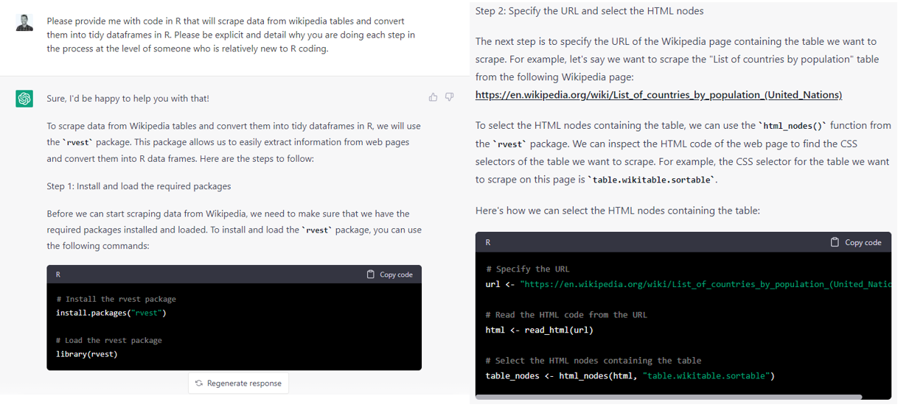
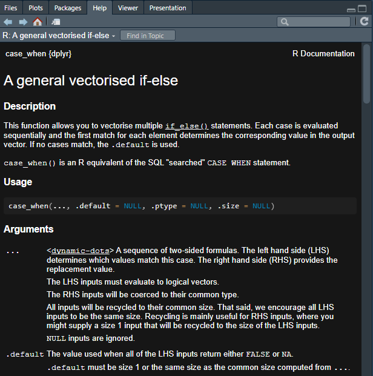
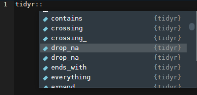

suppressPackageStartupMessages(library(tidyverse))
mtcars %>%
select(type) %>%
head()Error in `select()`:
! Can't subset columns that don't exist.
✖ Column `type` doesn't exist.Peter Licari ![]()
Attaining mastery in R is not about avoiding hiccups, but about learning what to do when you’re inevitably confronted with them. However, this is hardly covered in most introductory materials for the language; you tend to get this knowledge from the school of hard knocks. In this post, I hope to pull back the curtain a bit in a way that’s helpful to people who may be getting started with R. I write out the four most common categories of headaches I face when programming/doing analytics in R. With each headache, I talk about the things I search for and why. I’ll wrap-up by talking about my problem-solving framework.
I’ve been working in R for a bit over five years now1—and though I certainly can’t say that I’ve mastered every package, framework, or dialect, I’ve wracked up enough experience to be pretty competent as both a user and developer. But competence in R (and any other programming language for that matter) shouldn’t be thought as how effortlessly one produces working code. I’d argue it’s the opposite. It’s about what you do when your code doesn’t work.
A while back, I listened to Brian Christian’s book The Alignment Problem and there was a story when he was discussing imitation learning that stuck with me. Specifically, it was the part where former Carnegie Mellon graduate student Stéphane Ross wanted to train a model on how to play a knock-off of Super Mario Kart. Ross was quite good at the game, so he provided the model with the training data by playing it himself—the model ingesting the visual data on screen as well as how he moved his joystick. After hours of play, he set it loose.
If you think this plan would result in an agent that was, itself, good at Mario Kart because it was learning from someone who was good at Mario Kart, you’d actually be wrong. Because the model had only been trained on successful runs, it had zero clue on how to course correct when something went awry. As Christian explains:
At its root, the problem stems from the fact that the learner sees an expert execution of the problem—and an expert almost never gets into trouble. No matter how good the learner is, though, they will make mistakes, whether blatant or subtle. But because the learner never saw the expert get into trouble, they’ve also never seen the expert get out.
The situation can be summed up neatly in two of my favorite quotes:
“An expert is a person who has made all the mistakes that can be made in a very narrow field” – Niels Bohr
“Everyone has a plan until they get punched in the mouth” – Mike Tyson
So this is a post where I pull back the curtain a bit, to show how I course-correct when something doesn’t go right. To show what I do when R punches me in the mouth.2 My hope is to convey both the types of impediments that give me grief when coding in R but also the types of resources I lean on and the kinds of things that I type into Google to get me on the right track. Because, yes, as a coder, I rely heavily on Google. The open secret: We all do.
From my experience as a practitioner and instructor of R, most frustrations people deal with, beginner and veteran alike, can be lumped into 4 categories:
For all of these, when they get to a certain level of opaqueness and complexity, I’m going to turn to the oracle Google. I may also turn to ChatGPT if I’m working with a popular package or framework. I’ll talk a bit about what I’ll search for in each case but, to avoid being redundant, I’m going to mention what sources I’ll tend to seek out once I’ve hit the results page—mostly because they’re largely the same across issue areas.
?FUNCTION_NAME in the console. For instance, if I was having trouble understanding dplyr’s across function, I would type ?across. You can also look at the exported functions and objects from packages by writing out the package name followed by two colons (e.g., MASS:: or ggplot2::). If you want to see all objects and functions, you’d bump that up to 3 colons(:::).github.io somewhere in their domain name. I may also just go to the individual GitHub repository to see what things they leave in their “read me” files. GitHub sites are usually good for vignettes to show what sorts of things are typically done with the functions within a package (or at least what their designers had as their intent). GitHub can also be good for when you start to do more specialty/development work; the issues opened on various projects can be a goldmine.tidyverse.org. So if I catch a web address where the package itself (or its larger family) is part of the domain name, then I’ll often go there for documentation.I’m going to talk about how I tend to approach errors/hiccups of these kinds. I’ll try to sprinkle in some common examples as I go.
The first thing I do—and I know that this is going to sound just so incredibly pedantic, but please stay with me—is do my best to read the error message closely.
Don’t get me wrong: A lot of these error messages have been written by software engineers—and software engineers aren’t known to be, uh, particularly verbose or descriptive. But, a lot of package developers, especially those in or adjacent to the Tidyverse, work to include more informative errors. But, even for these, you need to know what you’re looking for.
Let’s say that I’m playing around with the mtcars dataset and I try to select a column that doesn’t exist:
suppressPackageStartupMessages(library(tidyverse))
mtcars %>%
select(type) %>%
head()Error in `select()`:
! Can't subset columns that don't exist.
✖ Column `type` doesn't exist.This error is very clear: it’s telling me that the column that I passed along to the select statement (type) is not a variable in the data frame. My resolution here is similarly clear: Fix what I’ve passed to the select statement so that I can get the proper output.
A similarly descriptive error (at least once you’ve gotten the hang of it) will come up when you invariably put in one too many (or few) of some critical character in R: +, }, ,, ), ], etc. It will tell you that there’s an “unexpected character” somewhere and will provide you with where the incongruity is.
ggplot(mtcars, aes(x = wt y = mpg)) +
geom_point()Error: <text>:1:27: unexpected symbol
1: ggplot(mtcars, aes(x = wt y
^This error is admittedly a bit tricky sometimes to get your head around at first because it ostensibly crops up in the absence of a symbol and not just the “unexpected presence” of one. But it makes more sense once you remember that y is indeed a symbol and it isn’t expected there—function arguments are supposed to be separated by ,s!
Normally when I see unexpected symbol errors, my first thought is to make sure that I’m balanced on the number of left-hand symbols (i.e., [, (, {) and right hand symbols (], ), }); if you’ve got one on the left, you need one on the right and vice-versa. Then I’ll check for errant commas—or that they are where they’re supposed to be.
Some errors require a bit more understanding of R as a programming language to parse before they become “obvious.” Say that I want to add a new column to the mtcars data. This will work:
mtcars$new_col <- c(1,2)This will not:
mtcars$new_col <- c(1,2,3)Error in `$<-.data.frame`(`*tmp*`, new_col, value = c(1, 2, 3)): replacement has 3 rows, data has 32Yet this will:
mtcars$new_col <- c(1,2,3,4)And, again, this will not.
mtcars %>%
mutate(new_col = c(1,2))Error in `mutate()`:
ℹ In argument: `new_col = c(1, 2)`.
Caused by error:
! `new_col` must be size 32 or 1, not 2.Why does it matter that this vector has 3 and that the data has 32?! 2 and 4 seemed fine! And why did 2 work for base R but fail in the mutate context?
Well, because R allows for this thing called “recycling.” Basically, if you try to put two unequal vectors together but one of them can evenly divide into the other, R will “recycle” the values over and over again until they fill out the space.
data.frame(x = 1:6, y = 1:2) x y
1 1 1
2 2 2
3 3 1
4 4 2
5 5 1
6 6 23 doesn’t divide evenly into 32, so an error crops up there. However, dplyr’s mutate doesn’t recycle values greater than 1. It’s a quirk of that package. You will come to learn many of the quirks of the packages you use most often. But, in both cases, R told you exactly what was wrong although it only told you why that was an issue with mutate.
Let’s say that you’re returning to your script in a new session. You were trying to filter mtcars by those with a value of 4 for the cyl column.
Warning: 'dplyr' namespace cannot be unloaded:
namespace 'dplyr' is imported by 'tidyr' so cannot be unloadedmtcars %>%
filter(cyl == 4)Error in filter(., cyl == 4): object 'cyl' not foundOk. No problem. You’ll just go to a different part of your script where you saved a dataframe as df and looked at the top 6 values:
head(df)
1 function (x, df1, df2, ncp, log = FALSE)
2 {
3 if (missing(ncp))
4 .Call(C_df, x, df1, df2, log)
5 else .Call(C_dnf, x, df1, df2, ncp, log)
6 } Ok that’s not an error, but what even is it?!
There are other cases that I’ve come across where R will warn me about something going wrong with a Hessian, or that some object is or isn’t subsetable, or that something or another is singular. Sometimes, I will have absolutely no idea what this means! So what do I do? Google it!
Usually, I’ll copy the first full line or sentence of the error and pop it right into Google. However, I don’t usually copy in the full error if there’s text in there that I recognize as being driven by my specific input—like a column or object name. Including things that are only driven by what I’ve personally done in the search might reduce the number of helpful hits I’ll get.3 So I’ll go for the longest uninterrupted part of the error that doesn’t seem to contain something specific to my call.
This will usually bring me to a Stack Overflow or to another forum. Good ones tell you what to do with your code so that you can keep on trucking. The great ones are those that explain what the code they’re suggesting does on an intuitive level. The best ones do all that plus provide alternative ways of approaching the problem and/or explain in clear language why the original error came up in the first place.
Let me give an example of this happening on a project I did at my last job.
I was working on functionalizing a type of analysis and spent some time with a logistic regression model. I wanted to predict outcomes from the approach I was testing to ensure it spat out reasonable estimates. First time I ran it, everything went fine—I got back a set of predicted probabilities all within the ballpark that I was expecting. I turned my attention to a marginal improvement I wanted to make in the function’s speed. Came back and re-ran the model. My predictions came back and everyone was either a 0 or a 1. Which is to say, not at all a reasonable set of predictions. Why did it just work before and why was it breaking all of a sudden?!
Here’s another example that tosses an error that might be fairly familiar. Let’s say that I import in a data set and I try to summarize the mean values of a column I’m interested in (in this case, it’s the penguins data from the {palmerpenguins} package and I’m interested in bill_length_mm).
library(palmerpenguins)Warning: package 'palmerpenguins' was built under R version 4.2.3dat4 <- penguins
data %>%
dplyr::group_by(species) %>%
dplyr::summarise(bill_length_mm)Error in UseMethod("group_by"): no applicable method for 'group_by' applied to an object of class "function"What do you mean a function?! I’m not passing a function, I’m passing data!
Or, at least, I thought I was. This bit of code is short enough that you should be able to catch it—the data is called dat4 but I’m invoking data—which, until it’s assigned something else, is actually the name of a base R function. But if you’re working in a longer script and not being careful/deliberate with your names, this sort of thing can drive you crazy for a few minutes as you question your sanity.
The causes for this sort of frustration usually boil down to people not working in what I’ll call a “linear” fashion. There’s a reason why folks who have been doing this a while insist that your script should be executable running it top to bottom without having to circle back or anything. But many practitioners (especially those who don’t have a strong coding background)4 will jump around in their scripts to tinker with this, try that out, maybe open up a new file and run some of the code in there. This also very frequently happens to folks who are new to RMarkdown or Quarto who have their test output coming out correctly because they ran chunks individually—but out of order. When it comes time to knit/render, they’re stymied by errors claiming that objects don’t exist but they can see the damn things in their environment—what do you mean they don’t exist?!.
The resulting analysis is one riddled with hidden dependencies or processes to work properly. This is pretty obvious with the second example, no data objects had been assigned to data so R still reserved that set of characters to refer to the function. (Which is actually a good tie-in to the first section: The error is telling you exactly what’s going wrong!). In the first example, my original data set had scaled predictors but then, in my quest to squash the minor thing, I overwrote that dataframe object to something with the same column names without scaled predictors. But I never updated the trained model. The result was that this “test” data had way more extreme values compared to the “training” data and, thus, everyone was given either 0s or 1s.
More often than not, if you’re getting an error or output that appears to make no sense in the context of the thing that you’re trying to do, the best advice is to take a short break and come back to the problem with fresh eyes. In order to prevent it from happening in the first place, frequently restart your session and make sure that you can get back right where you were with the code you’ve already written without having to do anything fancy. That means running your code top-to-bottom.
A related, but distinct, issue from the previous one is when you have a clear vision in your mind for what you’d like to accomplish but you can’t quite seem to figure out how to get the data to behave the way you’d like. This often happens to me when I’m designing a function and I know how I want the output to look, but I’m having a tough time figuring out how to get there from the input. Another, perhaps more common, example is trying to ingest data and/or manipulate a dataframe so as to create something structured like the outcome you have in mind. (Say, for instance, that I’m trying to take wide-formatted data and pivot it into long formatted data, but I need summary statistics and only a select few columns). There are few things more frustrating than having a gist of what you’re hunting for but not being able to actually see it to fruition.
Oftentimes these problems will come up because we are trying to get data of some sort “shaped” in a particular way—usually not for its own sake but to prepare it for some additional step. But I find that one of the most helpful first steps you can take is to take a moment to fully flesh out what this subsequent step will take for you to be successful. What type of input is necessary? Does it require a vector, a list, a dataframe? How many values, of what type(s), do they have to be named—if so, are their any requirements or restrictions? Can they have NA/NULL/Inf values? Sketch out5 what you need things to finish as. Just like solving a maze by starting at the end, sometimes this can clarify the direction you have to take.
Once you’ve done that, continue to work backwards. Compare the number of rows/columns/values in what you need compared to what you started with. Think about what data manipulation functions and/or summary operations you’ll need to do to go from each step to the next.6 This may require some trial and error so, once you’re done, please be sure to clean up your code so that it runs top-to-bottom so that you don’t run into the mistake we were just talking about in the previous section.
Oftentimes, for the work performed the vast majority of the time, the maintainers of the packages you are using for your transformation(s) have probably created tutorials or vignettes on how to do at least some of the steps that you’re looking to do. You don’t need to relearn how to pivot tables from wide to long and vice-versa: that documentation already exists in a way to easily grock the concepts! So when I google for things with this type of headache, I tend to keep an eye out for tutorials (on personal blogs and R-Bloggers) and on package vignettes. You may have to string multiple vignettes together to fully traverse the gap between your start and ideal end-state, but these resources can be tremendously useful. My google strategy here is to type in “how to do xyz in R” where “xyz” will refer not to my overall aim but to the specific kind of function/operation that I want to perform to complete the next step. (And, if you know the package you’re using/need to use—add it to the search query).
A tool that’s becoming increasingly useful for this is ChatGPT, especially GPT4, and other Large Language Models (LLMs). If you ask the model to not only help you take your input data and translate it to the output format you sketched earlier but to also explicitly detail the steps involved it will be able to do that pretty well. Here is an excerpt from an example of me doing this with GPT3 with scraping a table from Wikipedia.

You can also provide it your code as you currently have it and explain what you’re trying to do and it can help you debug and show you what to do instead to get to your desired endpoint.
LLMs aren’t perfect, but if you have a sense of where you’re starting, and you know where you’re going, it can provide tremendous savings in your overall coding time. It may require you to troubleshoot some errors but it’ll often be a net benefit to have code that gets you 70-80% of the way there rather than try to code it all from scratch yourself. This may break down if you’re trying to do something particularly novel or niche though. In that case, it may help to return to the Internet and/or break the problem down into more discrete steps.
In any event: Whether you use an LLM, Google, or you brute-force it yourself—the most helpful solution to this I’ve found is to have a concrete vision of where you want to go, an understanding of where you are, and a roadmap for the discrete steps you will have to take to get there.
For me, very few things are as frustrating as knowing that I know how to do something but finding myself flailing when actually executing it. There’s a icy panic that hits as you grasp at tendrils of a solution only to realize that you’re merely catching smoke. Then a deep frustration, almost shame, at being failed by the organ that happens to also do the bulk of constituting what you think of as “you” —and cue you sitting here wondering why you’re under-performing: if you’re just tired, stressed, or experiencing early-onset dementia. (This happens to me a lot if you haven’t guessed).
For me, there are four common reasons for this to come up:
This is why I unironically say that you should save every finalized line of code. Every. Line. And you should do your best to comment and format your code in such a way that you could return to it in 6 months and know what’s going on (e.g., using a consistent naming convention, commenting periodically, using names that make sense for your objects rather than just temp7). Storage is cheap and storing this will not be an issue for the vast majority of people who use R. There is absolutely no shame in going back and reusing your own code. Do not, I repeat, do not feel like you have to code every new project from scratch.
If you’ve lost your code or you didn’t format it so that it runs cleanly top-to-bottom, chances are that you had a little help before in the form of tutorials and vignettes. Ideally this time, you’ll vaguely recall a search string that at least got you going down the right rabbit hole (it helps if you remember where you got the info from so that you can add it to your search term).
The help documentation is your friend! For instance, I learned that {dplyr}’s case_when function has an option now for you to specify what the default output should be.8 But I couldn’t remember what it’s called. So I simply did this:
?case_whenWhich pops up a super handy pane that provides all of the help documentation the developers of the function have written for it.

And, right there, we can see that the argument that I’m looking for is called .default!
Another example: I was trying to remove duplicated values from a dataset using {dplyr} ’s distinct. But when I got the data back, all I had was a single column. It wasn’t until I looked at the help documentation that I was reminded that the default behavior is for a parameter called .keep_all to be set to FALSE!
This is where RStudio really comes in handy. If you type in the package name plus two colons (::) you can see all of the exported objects from the package. I frequently space-out on the name of the function is that drops NA values from dataframes. I know that it’s in the {tidyr} package though. So I’ll write out tidyr::…

That’s it! drop_na!
This helps me a lot when I have a vague sense of what the function I’m looking for is named and/or what it generally does. Worst case, I’ll just Google something like “how to drop NA values in R.” That is, I’ll do a search emphasizing the kind of action that I want to take.
I know that this will come as a terrible, Earth-shattering shock—but my recommendation here is to use either Google or a decent LLM. If you’re going the first route, it’s helpful to articulate what kind of end goal you have in mind. For instance, if I wanted to make a Waffle chart, I could Google “make waffle chart ggplot”. If I wanted to learn how to implement an upload box into my shiny app, I would go “add upload button shiny” or something to that effect. Even if I had a vaguer sense of what I wanted to do, I can type out what my end goal is and stick an “in R” at the end. (e.g., “how do I do bayesian regression in R?”, “how do I make interactive maps in R?”, “how can I connect to aws in R”, etc.). From there, find some code that others say works for the specific use case described on the page/in the forum/in the solution and apply it to yours. If you run into errors, follow the guidelines I’ve mentioned elsewhere in the post. As I mentioned at the top, learning R isn’t about knowing everything—it’s knowing that you don’t know, but learning that it’s necessary to ask!
Most of the roadblocks that I run into when I work in R can be resolved with the following general sequence of steps.
Start by fact-finding to identify a potential solution to your problem.
Test the potential solution with a prototype or minimal working example.
If it fails, tweak solution to match your context until it provides the output you were hoping for.
Apply solution to your original problem.
Revel in your success.
While this sounds like a pretty straight-forward chain, for problems of any decent complexity, it actually winds up looking a lot more like this:
flowchart TD
A((Scope-out\nFact-Find)) ---->|Found\nSomething|B((Prototype\nPossible\nSolution))
B -->|It\nworks|E((Test on\nLarger\\nFull Issue))
B -.-|"Fails; no\nidea why"|A
E -->|It\nworks|C[Success]
E -.->|"Fails; no\nidea why"|A
E -.->|"Fails; you\ngot a hunch"|B
B -.->|"Fails; you\ngot a hunch"| D((Tweak\nSolution))
D -->|It\nworks|C
D -.->|"Fails; you\ngot a hunch"|B
D -.->|"Fails; no\nidea why"| A((Fact-Find))
C -.->F{Revel?}
and that’s entirely normal. People think of coding as purely left-brain, rigid, logical but it’s actually a fundamentally creative act. Subsequently, learning how to do it is going to be a bit circuitous as you lay down bits of new rote knowledge in your brain and cultivate the kinds of connections between them that creative acts tend to entail: Less embarking on a mechanical sequence of steps, and more the calibrated free-fall of trundling down a staircase in the dark.
If something isn’t happening the way that you need it to in R, the first step is to gather information from trusted sources. This should clue you in to possible solutions. Test these solutions. If it works, great! If not, rinse and repeat.
That’s it. That’s all the magic. The trick is to do it often enough to know for when you need to search for general solutions (e.g., packages & tutorials) versus specific solutions (e.g., code-snidbits to resolve an error or achieve a desired output); and when you need to search for novel solutions versus already discovered solutions. (And to be able to intuit from the feedback R gives you whether this is something that even needs to be searched in the first place! Once you’ve clocked enough hours under your belt, you come to be intimately familiar with the usual suspects—so you’ll have a sense of when someone would be liable to prompt that feedback and, consequently, have a sense of where in your code it’s likely to crop up.)
I hope this guide has been helpful to you. Hopefully now you feel a little less intimidated by R and more empowered to expand your skills.
My first R class was in the summer of 2016, but I didn’t start consistently working with it until about 2018.↩︎
There’s a Type closure is not subsettable joke to be made here.↩︎
Plus! Learning to identify the parts of the error message that are more unique to your circumstance will help you get better at isolating the parts of the message that are trying to convey what’s wrong rather than where the wrong thing originates from.↩︎
It’s me. Hi. I’m the problem it’s me.↩︎
I’ve found it helpful to take this literally and just doodle how I want the output to look like in terms of its size, “shape”, and necessary column structure.↩︎
It helps to be familiar with packages like dplyr , data.table , and tidyr to know the kinds of steps that are even possible. This can be done through gradual immersion into R (the best way), or through Googling/LLMing (to coin a phrase) through a game of keyword telephone until you strike one that seems to describe the step you’re wanting to take. I know that that last one sounds more hacky and amateur but that is also a completely valid way of learning to make things happen—especially if you’re on a tight deadline.↩︎
Hi Kettle, you can call me Pot.↩︎
When I first learned it, any case that wasn’t covered in the listed cases was set to NA unless you did something like TRUE ~ 0 (presuming you wanted 0 to be your default).↩︎
@online{licari2023,
author = {Peter Licari},
title = {What to Do When {R} Punches You in the Mouth},
date = {2023-04-04},
url = {www.peterlicari.com/posts/r-punch-in-face-23},
langid = {en}
}